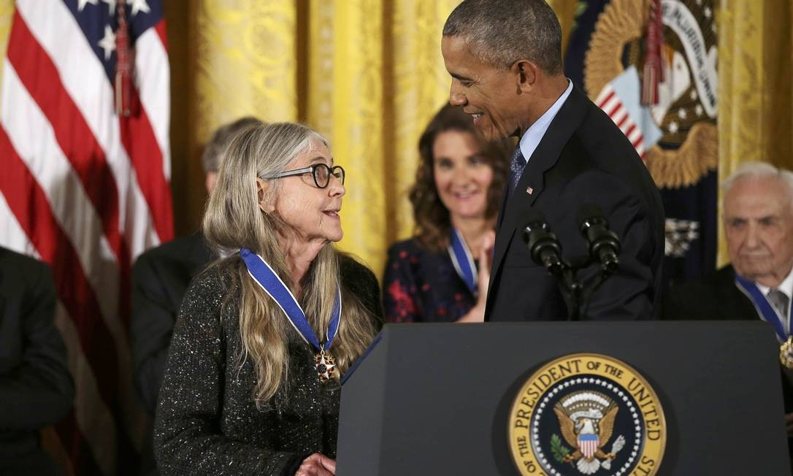

Você ja ouviu falar em Margaret Hamilton?

Quando Apollo 11 estava quase pousando na Lua, um problema aconteceu.
Vários alarmes começaram a tocar. O computador estava sobrecarregado devido as atividades do radar de aproximação.
Essa ação, somada às atividades de pouso, ultrapassaram o limite do que a máquina era capaz de fazer.
E a missão seria abortada se alguém não tivesse previsto uma situação como essa. E esse alguém foi Margaret Hamilton.
